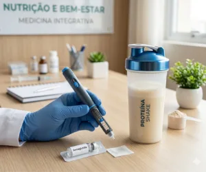

Para quem usa caneta emagrecedora
Potencialize sua Caneta com o Poder da Proteína
Como usar a proteína a seu favor durante o tratamento com a caneta, para emagrecer cuidando da massa muscular.
R$ 27,90
Quero potencializar minha caneta (abre o pagamento em nova aba)